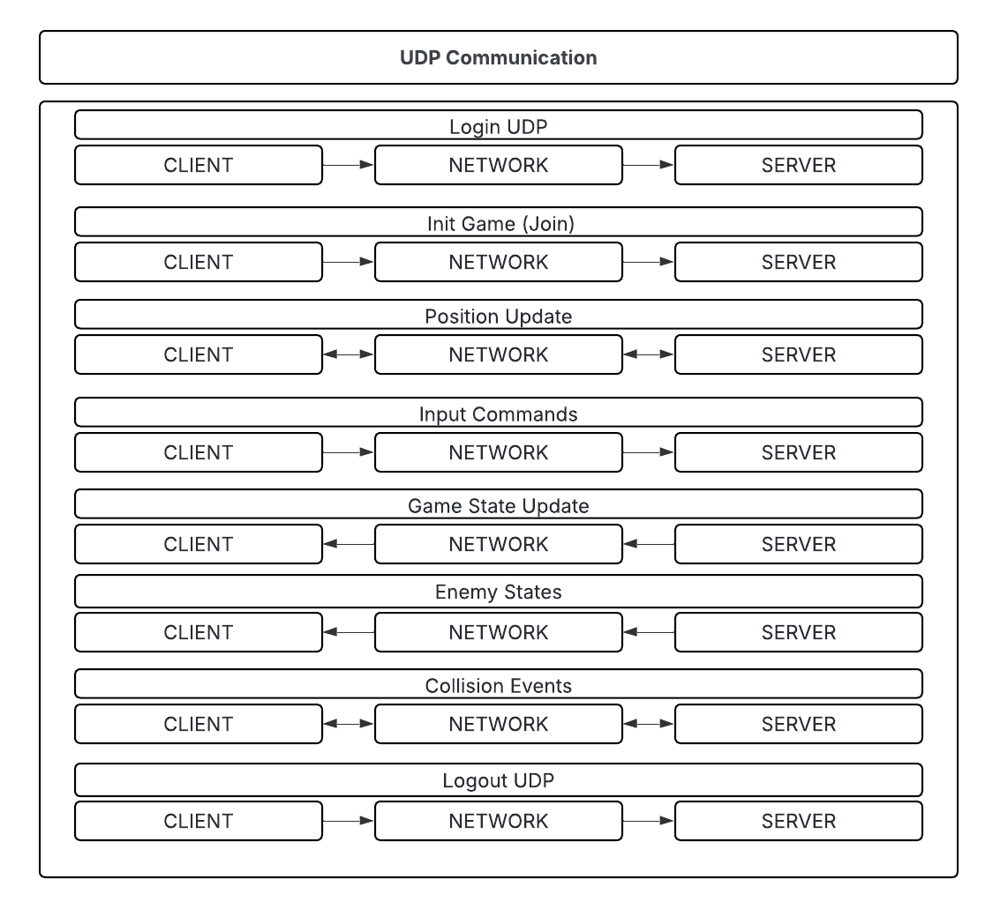

R-TYPE Developer Documentation¶
R-TYPE is a multiplayer shoot’em up video game developed in C++20, inspired by the classic arcade game R-Type. The player controls a spaceship that must defeat waves of enemies and dodge incoming projectiles.
The main goal of this project is to design a modular, reusable, and networked game engine using an ECS (Entity Component System) architecture. The client manages graphics and inputs (via SFML), while the server handles logic, synchronization, and communication (via ASIO).
This documentation is intended for developers joining the project. It focuses on: - Understanding the architecture (ECS, systems, networking), - Knowing how to build and run the project, - Following team conventions and code contribution rules.
—
Overview¶
R-Type is divided into three core modules:
Engine (ECS Core Library) - Implements the Entity Component System architecture. - Manages entities, components, and systems. - Shared between client and server.
Client (Front-end Application) - Uses SFML for rendering, audio, and input. - Communicates with the server to display synchronized game states.
Server (Game Logic and Networking) - Manages all connected clients, runs the simulation, and ensures consistency using ASIO (UDP).
—
Architecture¶

High-level architecture:
The Server maintains the authoritative world state.
The Client sends inputs and renders visuals based on server updates.
The Engine (ECS) handles all entity logic and is shared between both.
Each entity in the game (e.g., Player, Enemy, Projectile) is represented by a set of components (data) processed by systems (logic).
—
ECS Core Engine¶
The Entity Component System decouples data from logic, improving scalability and maintainability.
Core Components:
- Registry — Stores and manages all entities and components.
- sparse_array — Efficient storage for optional components.
- System classes — Apply updates (movement, collisions, etc.) to relevant entities.
Example: Movement System
void MovementSystem::update(Registry ®, float deltaTime) {
auto &positions = reg.get_components<Position>();
auto &velocities = reg.get_components<Velocity>();
for (size_t i = 0; i < positions.size(); ++i) {
if (positions[i] && velocities[i]) {
positions[i]->x += velocities[i]->dx * deltaTime;
positions[i]->y += velocities[i]->dy * deltaTime;
}
}
}
This ensures each component has a single responsibility, making the engine easily extensible.
—
Components¶
Each component represents a specific property of an entity.
struct Position { double x, y; };
struct Velocity { double dx, dy; };
struct Health { int hp; };
struct Damage { int value; };
struct Hitbox { double width, height, x, y; };
The Registry manages component creation and deletion dynamically, allowing flexible entity composition.
—
Systems¶
Systems represent the logic layer of the ECS (Entity Component System). Each system iterates through entities that have certain components and applies transformations, physics, rendering, or networking.
They form the core of how the R-Type game behaves — from movement and collisions to rendering and networking.
—
Movement System¶
The MovementSystem is responsible for moving entities by updating their positions according to their velocity.
It works by iterating through all entities that contain both a Position and a Velocity component.
Responsibilities: - Apply movement each frame based on delta time. - Keep entity positions consistent across server and client. - Prepare synchronization updates for the network system.
Example Implementation:
void MovementSystem::update(Registry ®, float deltaTime) {
auto &positions = reg.get_components<Position>();
auto &velocities = reg.get_components<Velocity>();
for (size_t i = 0; i < positions.size(); ++i) {
if (positions[i] && velocities[i]) {
positions[i]->x += velocities[i]->dx * deltaTime;
positions[i]->y += velocities[i]->dy * deltaTime;
}
}
}
Example Components:
struct Position {
double x, y;
Position(double x_, double y_) : x(x_), y(y_) {}
};
struct Velocity {
double dx, dy;
Velocity(double dx_, double dy_) : dx(dx_), dy(dy_) {}
};
Usage: The MovementSystem is executed every frame during the update loop on both the server (for physics) and client (for local interpolation).
—
Collision System¶
The CollisionSystem detects when two entities overlap (collide) using their Hit_box components. This system primarily runs on the server, as it determines gameplay events like hits, damage, or projectile impacts.
Responsibilities: - Detect collisions between entities. - Compute collision points. - Trigger appropriate responses (damage, destruction, etc.). - Log collision events for the network system to synchronize.
Example Implementation:
bool checkCollision(const Hit_box& a, const Hit_box& b) {
return (a.x < b.x + b.width &&
a.x + a.width > b.x &&
a.y < b.y + b.height &&
a.y + a.height > b.y);
}
std::pair<double, double> getCollisionPoint(const Hit_box& a, const Hit_box& b) {
double collisionX = std::max(a.x, b.x);
double collisionY = std::max(a.y, b.y);
return {collisionX, collisionY};
}
void CollisionSystem::update(Registry ®) {
auto &hitboxes = reg.get_components<Hit_box>();
for (size_t i = 0; i < hitboxes.size(); ++i) {
for (size_t j = i + 1; j < hitboxes.size(); ++j) {
if (hitboxes[i] && hitboxes[j]) {
if (checkCollision(*hitboxes[i], *hitboxes[j])) {
auto point = getCollisionPoint(*hitboxes[i], *hitboxes[j]);
std::cout << "Collision detected at (" << point.first << ", " << point.second << ")" << std::endl;
}
}
}
}
}
Example Component:
struct Hit_box {
double width, height, x, y;
Hit_box(double w, double h, double _x, double _y)
: width(w), height(h), x(_x), y(_y) {}
};
Usage: - Used by the server to manage physical interactions. - Often triggers audio and visual feedback via AudioSystem and RenderSystem.
—
Render System¶
The RenderSystem handles the graphical rendering of all entities on the screen using SFML. It draws backgrounds, entities, and UI text every frame.
Responsibilities: - Load and cache textures. - Display entities (Sprite components). - Manage background scrolling. - Render text for UI and HUD elements.
Example Implementation:
void RenderSystem::update(Registry& registry, sf::RenderWindow& window) {
window.clear();
renderBackground(registry, window);
renderEntities(registry, window);
renderUI(registry, window);
window.display();
}
void RenderSystem::renderEntities(Registry& registry, sf::RenderWindow& window) {
auto& renderComponents = registry.get_components<Sprite>();
for (size_t i = 0; i < renderComponents.array_size(); ++i) {
if (auto& comp = renderComponents[i]) {
if (comp->visible)
window.draw(comp->sprite);
}
}
}
Example Components:
struct Sprite {
sf::Sprite sprite;
bool visible = true;
};
struct Background {
sf::Sprite sprite;
};
Summary: - Client-side only. - No logic, purely visual. - Works closely with the ECS registry.
—
Audio System¶
The AudioSystem plays sounds and background music using SFML Audio. It interacts with entities containing the Audio component.
Responsibilities: - Manage sound buffers and playback. - Control music volume and looping. - React to events (e.g., explosions, collisions, etc.).
Example Implementation:
void AudioSystem::playSound(const std::string& id, float volume) {
if (sounds.find(id) != sounds.end()) {
sounds[id].setVolume(volume * (masterVolume / 100.0f));
sounds[id].play();
}
}
void AudioSystem::update(Registry& registry) {
auto& audioComponents = registry.get_components<Audio>();
for (size_t i = 0; i < audioComponents.array_size(); ++i) {
if (auto& comp = audioComponents[i]) {
if (comp->shouldPlay) {
playSound(comp->soundId, comp->volume);
comp->shouldPlay = false;
}
}
}
}
Example Component:
struct Audio {
std::string soundId;
float volume = 100.0f;
bool shouldPlay = false;
};
Usage: - Client-only. - Called every frame to check for new sounds to play.
—
UdpModule (Server Networking)¶
The UdpModule is the networking backbone of the R-Type server. It manages client communication using ASIO with asynchronous UDP sockets.
Responsibilities: - Listen for client input packets. - Send updates to clients. - Operate asynchronously to maintain real-time performance.
Example Implementation:
UdpModule::UdpModule(asio::io_context &context, short port)
: _socket(context, asio::ip::udp::endpoint(asio::ip::udp::v4(), port))
{
std::cout << "[UDP] Listening on port " << port << std::endl;
}
void UdpModule::listen(std::function<void(std::error_code, std::size_t, udp::endpoint, std::array<char, 1024>&)> callback) {
buffer.fill(0);
_socket.async_receive_from(asio::buffer(buffer), _endpoint,
[this, callback](std::error_code ec, std::size_t len) {
callback(ec, len, _endpoint, buffer);
}
);
}
Example Usage:
asio::io_context context;
UdpModule udpServer(context, 4242);
udpServer.listen([](std::error_code ec, std::size_t len, udp::endpoint client, std::array<char, 1024>& data) {
if (!ec)
std::cout << "Received from " << client.address() << ": "
<< std::string(data.data(), len) << std::endl;
});
context.run();
Summary: - Server-only system. - Non-blocking, efficient, scalable. - Communicates via packets defined in the Protocol.hpp.
—
Summary¶
Together, these systems form the core logic loop of the R-Type engine: 1. The server updates positions and handles collisions. 2. The client renders visuals and plays sounds. 3. Both communicate through UDP to stay synchronized in real time.
—
Networking¶
R-Type uses ASIO (UDP) for high-performance real-time networking.
Server: - Receives client input packets (e.g., movement, shooting). - Updates the ECS world state. - Sends back synchronized updates (entity positions, events).
Client: - Sends player actions to the server. - Receives updated world state packets. - Updates its local ECS registry for rendering.
{kind=link}
—
Comparative & Technical Study¶
Languages: - Chosen: C++20
Enables templates, type-safety, and high-performance ECS patterns.
Alternatives: Rust, C# (Unity ECS) - Rust ensures memory safety but has a smaller ecosystem. - Unity is simpler but less customizable.
Libraries: - SFML (graphics, sound, input)
Chosen for its simplicity and cross-platform support.
ASIO (network) - Lightweight, non-blocking, ideal for real-time UDP communication.
Conan (dependency manager) - Automates cross-platform builds for both server and client.
Design Patterns: - ECS Pattern for modularity. - Factory Pattern for entity creation. - Observer/Event system for state synchronization.
—
Contribution & Coding Guidelines¶
Code Style: - Follow Epitech C++ standard (header guards, naming, formatting). - Each system and component has its own .hpp and .cpp.
Commit Rules: - Clear, imperative messages:
Example: feat(network): add packet serialization
Branch Naming: - feature/<feature-name> for new features - fix/<issue-name> for bug fixes
Documentation: - Use Doxygen comments for public functions. - Update Sphinx docs when adding systems or architecture changes.
Example Workflow: 1. git checkout -b feature/movement-system 2. Implement + test locally 3. Update docs and run make html 4. Open Pull Request
—
Build Instructions¶
Configure and build:
mkdir build && cd build cmake .. make -j
Run the server:
./r-type_server
Run the client:
./r-type_client
—
Credits¶
Developers: - Océane KODJELA — ECS Engine & Systems - Zoltan BABKO — Networking & Server - Aurel PLIYA, Paul MOURENS, Vlad BURGA — Client & Graphics
Developed as part of Epitech G-CPP-500 (2025).